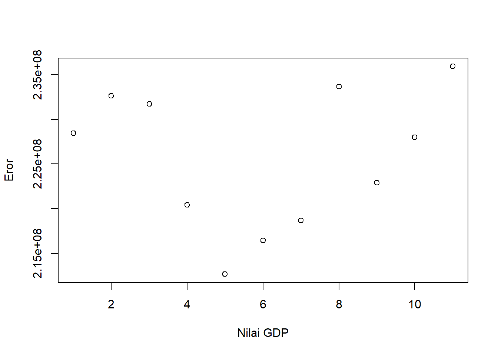

library(readxl)
dat<-read_excel('latihan.xlsx')
reg1<-lm(Y~X, data=dat)
plot(dat$Y,dat$X, xlab="Nilai Ekspor", ylab="Nilai GDP")Analisis Ekspor Batu Bara Indonesia Terhadap Nilai GDP Indonesia di Sektor Pertambangan dan Penggalian
Metode Penelitian Politeknik APP Jakarta

1 Pendahuluan
1.1 Latar belakang
Perdagangan internasional merupakan sarana melakukan pertukaran barang dan jasa internasional. Perdagangan internasional telah mengalami pertumbuhan dan berkembang secara drastis. Perdagangan internasional ini menyebabkan adanya kerjasama internasional yang terjalin antar negara, kegiattan ini merupakan elemen penting dari proses globalisasi. Membuka perdagangan dengan berbagai negara di dunia akan memberikan keuntungan dan membawa pertumbuhan ekonomi dalam negeri, baik secara langsung maupun tidak langsung.
Di Indonesia, proses perdagangaan internasional berperan sangat penting. Perdagangan internasional adalah cara yang dilakukan setiap negara untuk bekerjasama dalam bidang jasa atau barang, dari tahun ke tahun kegiatan ini semakin tumbuh dan berkembang di segala bidang. Sehingga hal ini menjadi bagian terpenting dari proses globalisasi.
Setiap negara, salah satunya adalah indutri pertambangan di Indonesia pasti memiliki perkembangan ekonomi yang ditentukan dari Produk Domestik Bruto (PDB) atau seringkali disebut Gross Domestic Product (GDP). Menurut Badan Pusat Statistik, PDB pada dasarnya merupakan jumlah nilai tambah yang dihasilkan oleh seluruh unit usaha dalam suatu negara tertentu, atau merupakan jumlah nilai barang dan jasa akhir yang dihasilkan oleh seluruh unit ekonomi.
1.2 Ruang lingkup
Penulis membatasi penelitan ini dalam ruang lingkup:
- Pembahasan hanya sebatas pada kondisi ekspor Batu Bara Indonesia dan kondisi GDP Indonesia khususnya sektor pertambangan dan penggalian
- Pembahasan mengenai pengaruh dari ekspor batu bara Indonesia terhadap kondisi GDP Indonesia khususnya sektor pertambangan dan penggalian
1.3 Rumusan masalah
- Bagaimana kondisi ekspor batu bara negara Indonesia?
- Bagaimana kondisi GDP Indonesia khususnya sektor pertambangan dan penggalian?
- Apakah ekspor batu bara Indonesia memberikan pengaruh terhadap GDP Indonesia khususnya sektor pertambangan dan penggalian?
1.4 Tujuan dan manfaat penelitian
Penelitian yang dilakukan oleh penulis ini bertujuan untuk mengetahui kondisi ekspor batu bara yang dimiliki Indonesia sehingga dapat mempengaruhi GDP negara Indonesia, selain itu peneulis melakukan penelitian ini dengan tujuan untuk memenuhi tugas ujian akhir semester 3 mata kuliah metodologi penelitian. Penulis juga berharap penelitian ini akan memberikan manfaat berupa: 1. Penelitian ini dapat dijadikan sumber informasi bagi para pembacanya 2. Penelitian ini juga dapat dijadikan sebagai referensi penulisan makalah atau karya ilmiah lainnya bagi orang yang membutuhkan
2 Studi pustaka
Pada era globalisasi saat ini perbaikan ekonomi difokuskan pada perdagangan internasional yang timbul karena adanya permintaan. Hal ini dikarenakan adanya kebutuhan suatu produk yang tidak dapat dihasilkan oleh suatu negara. Salah satu yang harus terpenuhi agar roda industri dapat berjalan adalah dengan tersedianya bahan bakar sebagai penggerak mesin industri. Kebangkitan industri, transportasi, globalisasi mempunyai arti penting dalam era globalisasi dan berdampak dalam perdagangan internasional, oleh sebab itu negara-negara di dunia berusaha untuk memenuhi pasokan energi dalam negeri agar industrinya dapat berjalan (Salvatore, 2007).
Ekspor adalah penjualan barang dari suatu negara ke negara lain. Ekspor dapat memberikan keuntungan yaitu bertambahnya devisa negara. Barang ekspor adalah barang yang banyak dimiliki oleh suatu negara kemudian dijual ke negara yang sedang membutuhkan barang tersebut. Penjualan barang atau jasa ke luar negeri merupakan salah satu upaya untuk meningkatkan pertumbuhan ekonomi, maka dari itu harus ada kebijakan untuk peningkatan ekspor seperti menyederhanakan sistem administrasi ekspor, menyediakan barang ekspor, menurunkan harga ekonomi, mengembangkan produk-produk Indonesia, meningkatkan infrastruktur, stabilisasi nilai tukar rupiah dan meningkatkan keahlian tenaga kerja Indonesia (Salomo,.2007).
Komoditi Batu Bara memberikan manfaat ekonomi melalui ekspor yang menghasilkan devisa untuk negara sesudah komoditi minyak dan gas. Batu Bara awalnya digunakan untuk menggerakan mesin uap yang pada saat itu masih banyak digunakan sebagai mesin lokomotif kereta api, kapal laut dan berbagai sektor termasuk produksi besi dan baja (Wijaya et al., 2018).
Menurut mankiw (2003) pengertian Gross Produk Domestik (GDB) adalah nilai pasar dari semua barang dan jasa akhir yang diproduksi untuk jangka waktu tertentu. Salah satu indikator paling umum Ekonom mengukur keberhasilan suatu negara konverter ekonomi adalah Gross Domestic Product (GDP). Dengan pengukuran persentase kenaikan Gross Domestic Product dengan harga konstan, sehingga pertumbuhannya adalah Tingkat pertumbuhan yang ditargetkan dicapai dalam produksi barang dan jasa di sektor ekonomi. Dalam konteks ini, hakekat dalam pembangunan ekonomi adalah reproduksi taraf hidup masyarakat meningkatkan pendapatan kapita penduduk.
3 Metode penelitian
3.1 Data Nilai Ekspor Batu Bara dan Nilai GDP Indonesia
| Tahun | Nilai Ekspor (US$) | Nilai GDP (US$) |
|---|---|---|
| 2012 | 24288,2 | 228444298,29 |
| 2013 | 22759,7 | 232661007,22 |
| 2014 | 18697,7 | 231725331,20 |
| 2015 | 14717,3 | 220406120,53 |
| 2016 | 12914,6 | 212649629,48 |
| 2017 | 17877,0 | 216447123,62 |
| 2018 | 20631,3 | 218686721,79 |
| 2019 | 18957,2 | 233680623,64 |
| 2020 | 14957,2 | 222909197,49 |
| 2021 | 26533,1 | 227991366,03 |
| 2022 | 46764,9 | 235949042,97 |
Sumber: Badan Pusat Statistik (BPS)
3.2 Plot Nilai Ekspor dengan Nilai GDP
3.3 Plot Nilai GDP dengan Nilai Ekspor
library(readxl)
dat<-read_excel('latihan.xlsx')
reg1<-lm(Y~X, data=dat)
dat$u<resid(reg1)Warning: Unknown or uninitialised column: `u`.logical(0)plot(dat$Y, dat$u, xlab="Nilai GDP", ylab="Eror")Warning: Unknown or uninitialised column: `u`.
3.4 Metode analisis
Metode yang dipilih adalah regresi univariat atau Ordinary Least Square (OLS) dengan 1 variabel independen. Penelitian ini merbaksud mencari hubungan antara nilai GDP dan nilai ekspor. Spesifikasi yang dilakukan adalah:
\[ y_{t}=\beta_0 + \beta_1 x_t+\mu_t \]
Dimana: Yt adalah nilai GDP Indonesia, β0 adalah koefisien konstanta; β1 adalah parameter; Xt adalah nilai ekspor batu bara dan μi adalah error term.
4 Pembahasan
Indonesia memiliki keunggulan dari sektor pertambangan yaitu komoditas batu bara. Dari tahun ke tahun, ekspor batu bara Indonesia mengalami fluktuasi dikarenakan beberapa faktor seperti permintaan global, kebijakan energi di berbagai negara, serta kondisi geopolitik. Namun, nilai ekspor ini memberikan peran penting bagi perekonomian Indonesia. Badan Pusat Statistik mencatat, nilai ekspor komoditi batu bara yang dimiliki indonesia ini mengalami kondisi yang tidak stabil dari tahun ke tahunnya. Nilai ekspor batu bara terus mengalami penurunan mulai dari tahun 2013 hingga 2016. Kemudian mengalami peningkatan kembali pada tahun 2017 dan 2018. Nilai terendah terjadi pada tahun 2020 sebesar USD 14.534 hal ini dikarenakan terjadinya pandemi COVID-19 yang membuat perekonomian dunia mengalami penurunan hingga berdapmpak pada perekonomian Indonesia.
4.1 Pembahasan masalah
Berikut merupakan data dan visualisasi data yang telah dikumpulkan.
| Variabel | Coeficient | Std.Error | t.value | Prob |
|---|---|---|---|---|
| Intercept | 2.142e+08 | 5.078e+06 | 42.180 | 1.18e-11 |
| X | 5.258e+02 | 2.166e+02 | 2.428 | 0.0381 |
| R-Squared | 0.3958 |
|---|---|
| Adjusted R-Squared | 0.3287 |
| F-Statistic | 5.896 |
| Prob (F-statistic) | 0.0381 |
Dapat dilihat bahwa ekspor batu bara berpengaruh terhadap Nilai GDP Indonesia, hal ini ditunjukan dengan probabilitas X (Nilai Ekspor) yang cukupsignifikan. Nilai ekspor batu bara menjadi faktor yang dapat mendorong naik atau turunya perekonomian suatu negara. Nilai koefisien ekspor batu bara sebesar 5.258e+02 berarti ekspor batu bara dengan pertumbuhan GDP Indonesia di sektor pertambangan dan penggalian yang bernilai positif akan diikuti dengan naiknya pertumbuhan ekonomi. Maka dapat disimpulkan bahwa ekspor batu bara berpengaruh positif terhadap GDP Indonesia pada sektor pertambangan dan penggalian.
4.2 Analisis masalah
Hasil regresinya adalah
library(readxl)
dat<-read_excel('latihan.xlsx')
reg<-lm(Y~X,data=dat)
summary(reg)
Call:
lm(formula = Y ~ X, data = dat)
Residuals:
Min 1Q Median 3Q Max
-8327333 -4587695 -146630 3996962 9526273
Coefficients:
Estimate Std. Error t value Pr(>|t|)
(Intercept) 2.142e+08 5.078e+06 42.180 1.18e-11 ***
X 5.258e+02 2.166e+02 2.428 0.0381 *
---
Signif. codes: 0 '***' 0.001 '**' 0.01 '*' 0.05 '.' 0.1 ' ' 1
Residual standard error: 6384000 on 9 degrees of freedom
Multiple R-squared: 0.3958, Adjusted R-squared: 0.3287
F-statistic: 5.896 on 1 and 9 DF, p-value: 0.03815 Kesimpulan
Berdasarkan data hasil analisis Kuantitatif yang telah dilakukan penulis, dapat disimpulkan bahwa nilai ekspor batu bara Indonesia berpengaruh postif terhadap nilai GDP Indonesia sektor pertambangan dan penggalian.
Batu bara telah lama menjadi sumber energi yang paling banyak digunakan di Indonesia karena energi berbasis batubara masih memiliki permintaan yang tinggi secara global, pada akhirnya pertumbuhan industri pertambangan batu bara di Indonesia tidak dapat dihindari. Dengan demikian, hasil ekspor batu bara memberikan pengaruh besar yang positif bagi perekonomian Indonesia.
6 Referensi
Rosita, R., Asrini, A., & Veronica, D. (2023). Determinan Ekspor Batu Bara Indonesia Serta Kontribusinya Terhadap Ekspor Pertambangan dan Pendapatan Negara. Ebisma (Economics, Business, Management, & Accounting Journal), 3(2), Article 2. https://doi.org/10.61083/ebisma.v3i2.36
Wijaya, K. A., Nurjanah, R., & Mustika, C. (2018). Analisis pengaruh harga, PDB dan nilai tukar terhadap ekspor Batu Bara Indonesia. E-Journal Perdagangan Industri Dan Moneter, 6(3), Article 3. https://doi.org/10.22437/pim.v6i3.7349
Hartana, H. (2017). PROSES MEMBENTUK PERUSAHAAN BARU DALAM PELAKSANAAN EKSPANSI PERUSAHAAN GROUP DI SEKTOR PERTAMBANGAN BATUBARA. Perspektif, 22(2), Article 2. https://doi.org/10.30742/perspektif.v22i2.617